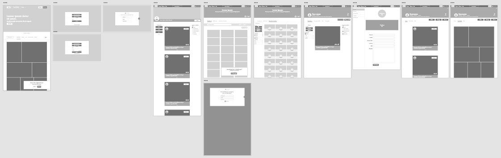
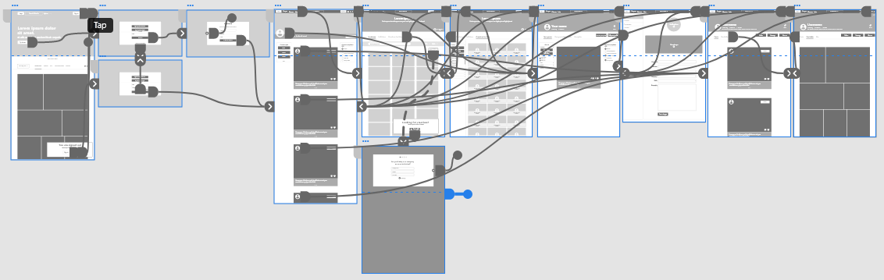

My role
Designing a Clicked-in website from conception to delivery.
Tool
Adobe XD
Designed for Connection
Clicked-in is a photography networking website, that allows users to create, update and promote their work. The product offers job hunting and posting offers, along with looking for coworkers.
Overview

Understanding
Assumptions
Users: Professional and amateur photographers.
User Goals: Expanding network, finding and posting commissions and collaboration requests.
Potential features: Suggested posts and profiles, different plans for different purposes, easy step-by-step job posts.
Meet the Users


User Journey Map
Borys’ user journey map revealed the need for a good networking database that allows users to find other photographers with complementary skills.

Initial Design Process
Site Map
Difficulty with website navigation was a primary pain point for users, so I used that knowledge to create a sitemap.
My goal here was to make strategic information architecture decisions that would improve overall website navigation. The structure I chose was designed to make things simple and easy.

Paper Wireframes
Next, I sketched out paper wireframes for each screen in my app, keeping the user pain points about navigation, browsing, and checkout flow in mind.
The home screen paper wireframe variations to the right focus on optimizing the browsing experience for users.

Digital Wireframes
As the initial design phase continued, I made sure to base screen designs on feedback and findings from the user research.
Using the completed set of digital wireframes, I created a low-fidelity prototype. The primary user flow I connected was creating the account and posting a job offer, so the prototype could be used in a usability study.
Usability Study
Study Type
Unmoderated usability study
Location
Poland, remote
Participants
5 participants, 3 male, 2 female, ages 18-53
Length
20-30 minutes per session
Usability Study Findings
Salary Range
Users would like to have a salary range included in the job offer
1
Short Description
Users would like to have short descriptions in their profiles
2
Skills
Users would prefer skills to be listed with ratings
3
Gender
Users don't want a gender option in profile creation
4
Refining the Design
Early designs allowed for some customization, but after the usability studies, I added additional options to go back to sign in window. I also revised the design so users don’t have to choose their gender when they first create their profile.


Usability study revealed, that users would like to have a short bio added to their profiles. I’ve also added a clearly indicated Add a new post button, to make the process more clear for the users.


The skill listing has been changed into tags system that allows rating of each of them.


Additional design changes included an option of adding a salary range to a job post.


High Fidelity Prototype
The high-fidelity prototype followed the same user flow as the low-fidelity prototype, including design changes made after the usability study.
View the Clicked-In high-fidelity prototypeKey Mockups


Takeaways
Impact
The app makes users feel like Clicked-in really thinks about how to meet their needs.
What I've learned
While designing the Clicked-in website, I learned that the first ideas for the app are only the beginning of the process. Usability studies and peer feedback influenced each iteration of the app’s designs.
Next Steps
Conduct another round of usability studies to validate whether the pain points users experienced have been effectively addressed.
1
Conduct more user research to determine any new areas of need.